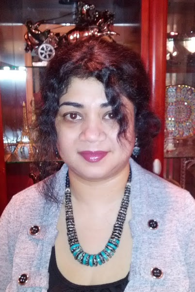

01 /
CROSS-MODAL ROBUSTNESS
Can safety survive attacks distributed across audio, video, and time?
Learn MoreModels can now hear and see the world continuously. Are their safety mechanisms ready for it?
Can safety survive attacks distributed across audio, video, and time?
Learn MoreCan a model distinguish what it observed from what it inferred?
Learn MoreWhat happens when AI continuously sees and hears people who never opted in?
Learn MoreContinuous sensing changes the safety problem. Audio-visual models now perceive the world over time, not only in isolated frames or single-turn prompts, which raises new risks for robustness, calibration, and consent.
As these systems move from controlled lab settings to physical-world deployment, safety must account for cross-modal interactions, uncertain perception, and the persistence of data collection in everyday environments.

All times are local. The schedule is tentative and subject to change.
| 08:45–09:00 | Welcome and Opening Remarks |
|---|---|
| 09:00–09:30 | Invited Talk 1 |
| 09:30–10:00 | Invited Talk 2 |
| 10:00–10:30 | Invited Talk 3 |
| 10:30–11:30 | Poster and Discussion + Coffee Break |
| 11:30–12:15 | Spotlight Paper Sessions12 min + 3 min Q&A × 3 |
| 12:15–13:15 | Lunch Break |
|---|---|
| 13:15–13:45 | Invited Talk 4 |
| 13:45–14:15 | Invited Talk 5 |
| 14:15–14:45 | Invited Talk 6 |
| 14:45–15:45 | Poster and Discussion + Coffee Break |
| 15:45–16:00 | Selected Tiny Paper Talks5 min × 3 |
| 16:00–17:00 | Panel Discussion40 min + 20 min Q&A |
| 17:00–17:15 | Awards and Closing Remarks |